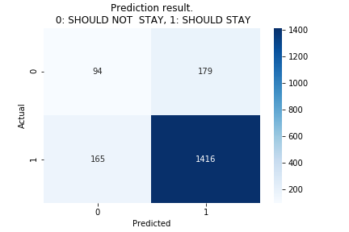

Kohei Suzuki
Hi, I am Kohei.
I am a Machine
Learning Engineer in the
Vancouver area with 6 months of working experience at Singular Software and
am actively
looking for a job as a Machine Learning Engineer in the Vancouver
area.
I
have spent a lot of time to fill computer science knowledge, especially in machine learning by doing
tutorials and kaggles, reading blog posts and papers, and getting my hands dirty by creating
projects.
I already have a valid work permit in Canada for one year which
starts from 1st May 2020.
I will definitely reach goals because I never give up on what I am
doing.
Main skills
OS: Ubuntu, OSX
Python: TensorFlow, Keras, Pandas, Numpy, Matplotlib, Sklearn, Jupyter Notebook, Tensorforce, SCipy, Flask
Others: Github, Anaconda, AWS EC2, Trello, Java, SQL, Bash, ssh
Experience
Machine Learning Developer Internship
Singular
Software has created a smartphone-based app, HeardThat, that
substantially improves the utility
of hearing aids
and other hearing assistive devices in noisy social situations.
The company was nominated for the top 10
companies in New Ventures BC
2019.
I worked as a Machine Learning Developer Internship and involved in creating HeardThat app in the early
developing stage.
My focus was evaluation of deep learning models that team members had
created.
I developed both internal and external platforms for the purpose of model evaluation.
The external platform is a place for Mechanical Turk where people can listen
to an audio file at a time
which is randomly chosen from some kind of file types such as ground truth, denoised, and mixed that has
conversation with noise.
Once people have listened to an audio, then they give it a score and type what
they just have heard that are stored into a database and that are used to calculate metrics.
We used
Flask for the backend and SQLite for the database.
One of the internal platforms was also created with Flask and was a place where team members can see waveform and spectrogram of any audio files that they were interested in. The coolest feature of that was that we could also display waveform and spectrogram based on an arithmetic calculation between two audio files we were interested in. For example, it could display the difference between a mixed file and a denoised file as waveform and spectrogram so that we could compare them with ones of the ground truth.
Creating platforms was not the only thing I had done. Another thing I did was calculating metrics of each model such as Mean Opinion Score (MOS) and Word Error Rate (WER) by using the given information that we got from Mechanical Turk. I had created a Jupyter Notebook with widgets where team members can choose a model in a dropdown menu to see its MOS and WER.
This internship was a remote work so we had a daily meeting on the call every day to catch up on what everyone had done the day before and what things each member was working on. And we also used Trello to manage our tasks.
Main technics I used during this internship: Ubuntu, SSH, Anaconda, Tensorflow, Numpy, Jupyter Notebook, Scipy, Matplotlib, Seaborn, Flask, SQLite.
Projects
Forex Trading System with Deep Reinforcement Learning
I loosely followed this paper,
Deep Reinforcement Learning for Foreign
Exchange Trading. What I mean by loosely is that I implemented their idea as the base and updated some
things which I will explain in the Obstacles section.
Before talking about what this project is I will explain two methods,
Gramian Angular Field (GAF) and the Sure-Fire
arbitrage strategy, that are used in this personal
project.
In this paper, they used GAF
to encode Time Series data into heatmap images that fed into ConvNet to capture hidden features.
They used Deep Reinforcement Learning (DRL) model in order to optimize a trading strategy, the
Sure-Fire arbitrage strategy, which is a variant of the Martingale.
The Sure-Fire starategy
First, as illustrated in Fig. 2, we purchase one unit at any price and set a stop-gain price of +k and a stop-loss price of −2k. At the same time, we select a price with a difference of −k to the buy price and +k to the stop-loss price and set a backhand limit order for three units. Backhand refers to engaging in the opposite behavior. The backhand of buying is selling and the backhand of selling is buying. A limit order refers to the automatic acquisition of corresponding units.
As illustrated in Fig. 3, when a limit order is triggered, and three units are successfully sold backhand, we place an additional backhand limit order, where the buy price is +k to the sell price and −k to the stop-loss price. We set the stopgain point as the difference of +k and the stop-loss point as the difference of −2k, after which an additional six units are bought.
As illustrated in Fig. 4, the limit order is triggered in the third transaction. The final price exceeded the stop-gain price of the first transaction, the stop-loss price of the second transaction, and the stop-gain price of the third transaction. In this instance, the transaction is complete. The calculation in the right block shows that the profit is +1k.
GAF encoding
On the left side, it shows close price in 5 minutes time frame with 12 window size.The other one is a heatmap image after encoded by using GAF.


About this project
 This is a personal project to learn about Reinforcement Learning and to see if it is possible
to make profit with DRL in the Forex market.
This is a personal project to learn about Reinforcement Learning and to see if it is possible
to make profit with DRL in the Forex market.What comes into the DRL and what comes out from the DRL.
What comes into DRL model is the encoded images as the state.And what comes out from DRL as well as what DRL actions are Stop Loss Take Profit (SLTP) pips, order type, and max level limit.
- SLTP pips: Which is the size from the entry price to take profit and stop loss price in pips.
- Order type: DRL model chooses one of the order types from buy, sell, or stay for each given state.
- Max level limit: How many times we place a reverse order.
MVP
I had created MVP within a month which runs on AWS EC2 where everything is automated. What the MVP does is that it runs on live data and places order on live data by using API provided from Oanda, which is a broker I use.Here is detailes of MVP. Everything below is automated.
- Every Monday after the Oceania market opens (at night on Sunday (GMT)), the server is booted. I set this up by using CloudWatch on AWS.
- Run bash shell when boot to open TMUX with a session in which the main Python script runs.
- Gets the last 2 hours data, Open, High, Low, and Close and converts to a heatmap image by using GAF.
- DRL model decides the order type, buy, sell, or stay, SLTP pips which is the size for each of Stop-Loss and Take-Profit, and Max limit level, how many times it places a reverse order. Keep doing this until the New York market close on Friday.
- After the NY market close every Friday, I set up the server shut down in order not to waste money on weekends.
- Additionally, I implemented a feature that sends me a push message to my LINE account every day when the NY market close with trading results of each day.
Obstacles
- One of the biggest things which I was stuck on was that DRL model did not make any profit when it was run on live data even though I could reproduce similar result with the one in the original paper. This took me a while to figure out but eventually it turned out that there was a difference between the data I used for training and the live data.The training data was CSV format which columns for DateTime, Open, High, Low, Close, and Volume and each row corresponded to each time frame. The problem was that each row in the training data is just a result of price movements in a time frame. For example, if the time frame is 5 minutes, each row is corresponding to the result of movings of price during the 5 minutes.
But in live data, we see the price is moving for 5 minutes. So the training data was not able to describe the price movements in each time frame.
The way I solved this problem was using smaller time frame data to describe price movements.


- DRL model always took STAY as an action after 600 episodes. Updated: 2020/02/23
Here is the result of training DRL model for 900 episodes.
 The result shows basically three facts.
The result shows basically three facts.- The more training goes the more trades happened.
- The model's performance has been improved as training goes.
- DRL model always took STAY as an action. (Exploration problem)
Firstly, I tuned up some parameters for exploration.
In the original paper, they had implemented only BUY and SELL for the order type but STAY.
After running the base model on live data that I implemented exactly the same as the one in the original paper, I figured out there were timings when it shouldn't have placed orders, instead, it should have just STAY.
So I had added STAY to the base in which DRL was able to take as an action.
But the reason why DRL took STAY after certain episodes could be that the model might figure out that always taking STAY as an action would be a way to maximize the total reward. Whatsmore it had stopped exploring.
So I defined a new reward function for STAY action by using a kind of Supervised approach.
I defined where the DRL model should STAY and not. For example, if the price will move directly Take-Profit line directly in the next 10 minutes, it shouldn't stay.
The new reward function for STAY actions that shouldn't have STAY is as follows:
For example, if we buy $1 USD at 109.050 JPY. Then our target price could be, let's say, 109.080 JPY. So here we would want to get 3 pips. Expected profit would be calculated by (109.080 - 109.050). And the base pip size I use is 0.001 in USDJPY currency pair. So the reward would be 5.4772.
Otherwise, the reward would be 0.
This is the result of the training with the new reward function for STAY and updated hyperparameters.
As you can see, successfully avoided the model taking the same actions after certain episodes. But the model's performance is not good because probably I set exploration parameter too high and the model did not try exploiting enough.
I will talk about how to improve the model's performance in the next section, "Trying to improve the DRL".
Trying to Improve the DRL
I have been trying to improve the DRL model by changing the archtecture of CNN and tuning hyperparameters for the PPO method.- Different CNN archtecture
The first archtecture I used was the same as one that the author used. For the sake of testing, I created a CNN model on Colab to see how well the archtecture can classify given images encoded by GAF into 2 categories, SHOULD STAY or not. Here are the results of the old version and new version.
| Old archtecture | New archtecture | |
|---|---|---|
| Confusion matrix |  |
 |
| Precision | 0.8805369127516779 | 0.8877742946708463 |
| Recall | 0.8298545224541429 | 0.8956356736242884 |
| F1 | 0.8544448062520352 | 0.8916876574307304 |
I added MaxPooling layers following Conv layers and changed the activation function to tanh from relu in Conv lasyers and a Dense layer.
- Tuning hyperparameters
I have spent some time tuning hyperparameters. What I have found so far is that the epsilon for action exploration parameter is pretty important because there is a concept of exploration and exploitation trade-off.
Worth to try
- Define a new state: The way I use to define state is that encoding Open, High, Low, Close by using GAF and stack them up to create 4 channel image. I believe that having technical indicators could help to improve model's performance. Here is my idea. Create 4 images whose size is (window size, window size, 4), then tiled them up as a new state.Ticket-Dodger [link]
This is the final team project in Machine Learning Bootcamp at 7 Gate Academy and
is an application predicting the likelihood of getting a parking ticket in
the Vancouver area based on
the user's geolocation and the time. When a user taps a location at where he is planning to park his
car or at where he is currently parking his car, that is going to be a trigger to call AWS Lambda
where our machine learning model runs to predict the likelihood.
Here is how I and Paul had created this application within a month.

We found dataset on Vancouver open data catalog, the original dataset had the information of parking
tickets issued such as date time, address including block, infraction, status, etc.
However the dataset obviously did not have any target variable that we could
use in our case the likelihood or probability
of getting a parking ticket. I will explain how we solve this problem in
Obstacles section
below but the simple answer is that we created by using traffic counts on
each
street.
We estimated the probability for each street and thresholded them to
create three categories, Low,
Medium, and High that were the likelihood we
were predicting.
So we dealt with this problem as a classification problem because it was
more user-friendly than
giving users a probability.
EDA
While we were working on feature engineering we found that the time was definetely a factor. As you can see below, there is high chances for getting a ticket around 3 PM.
Training Machine Learning Models
As I mentioned, this was a classification problem so we started from training a simple logistic regresssion because it was easy to implement.Afterwords, we trained different kind of models such as Random Forest, XGBoost, and Neural Networks. At first we made sure that there was a capacity for models to learn something from our data by trying them to overfit on the training data.
Then we started iteratively building more complecated models by changing, for instance in Multi Layer Perceptron (MLP), changing the number of neurons in each layer, the number of layers, optimizers, and so on.
Here is one of the results we got from MLP and XGBoost after Hyperparameter search by using Hyperas and Optuna that are framework in Python for Hyper parameter search.
Model Evaluation
Subjectively evaluating our models was difficult. The best that we could say was that we did a pretty good job of determining the low risk of getting a ticket. It is much more important for us to have accurate LOW risks. For example, if you park expecting a low risk and you end up getting a ticket, it will be a much worse user experience than if you went in expecting a ticket and got none!We did chase down a parking ticket enforcer and asked for his opinion and he gave us some streets that are common of getting a parking ticket. Our predictions from XGBoost were pretty good. Due to model's performance and inference time, 28.19 [ms], we choose XGBoost model.
Application Archtecture
Backend- Server: Flask running behind Gunicorn, and NGinx
- Custom built location to street matching engine
- XGBoost
- Deployment: DigitalOcean Droplet
- 1 vCPU
- 1 GB RAM
- 24 GB SSD
- ($5 a month)
Client Side
- Website: HTML and Javascript
- Map: LeafletJS serving OpenStreetMap (No google!)
- Deployment: Github Pages
- Free
How did we work as a team
Since we lived a little bit far to work together in person, it was important that we had a good system to work together.
We started by working together by sourcing our data, evaluating what we have and creating a merged base dataset.
In order to streamline our approach, we then split up our roles to focus on primary areas, building machine learning models was my focus and Paul was working on development.
Afterwards, we did a knowledge transfer to fill each other on the gaps that we might have missed out on.
We did loosely work in the agile way, changing things as we needed. We made sure we reviewed each others work to the standards that we set out for ourselves. To do so we used Trello to manage our tasks. Here are the some of the tags we had in our channel on Trello.
- Product backlog
- Current sprint
- Doing
- Review
- Blocked
- Done
- Nothing moves here unless it is reviewed by the other
We also has a daily meeting.
Obstacles
- Target variable creation As I mentioned above, we did not have a target variable, the probability or the likelihood of getting a parking ticket. We created one by using three datasets, one that contained the information of parking tickets issued, second that had the traffic counts on each street including some private streets, and third that had almost all of the street name in the Vancouver area.It was important for us to define what we mean by “Risk".
It was a fairly arbitrary term. We had decided to use the number of tickets given, divided by the amount of traffic on the street. In this way, we defined risk RELATIVE to the risk of other streets. The formula for estimating the probability for each block on each street was as follows:
In order to do the calculation, we needed to make sure that each street in the parking ticket dataset and traffic counts dataset were the same format to marge the two datasets with the streets as the key.
Here is an example of a street we needed to clean up: "WEST GEORGIA" and "GEORGIA W"
So we used a Python framework, fuzzywazzy, to clean up the streets name.
Education
7 Gate Academy
8 weeks, 3.5 hours * 4 days/week.
1st week: Data Engineering, Modeling, BigData (ETL, DWH, Airflow, Spark)
2nd week: Data Visualization (Matplotlib), Data Processing (Duplicated rows, Missing Values, Outliers, Multiple Value Ranges, Non-numerical Data)
3rd week: AutoML (Google Cloud, Microsoft Azure), ML Library (sklearn)
4th week: MVP, Interpretability, Problem-solving, ML Technics (Bias, Variance, Regularization, etc)
5th week: Planning and estimating the work, Data Science Scrum
6th week: Team Project
7th week: Team Project
8th week: Presentation about the team project, Ticket-Dodger
Institute of Technology Development of Canada
The course was 2 years diploma in Open Source Programming which contains one year in class and the secound year for Coop program. I worked as a Machine Learning Developer at Singular Software Inc.
Brain Station Vancouver
- UNIT 1 Python Programming
Programming Fundamentals, Pandas, Python Packages
- UNIT 2 Working with Data
Importing, Cleaning, Sampling
- UNIT 3 Data Visualization
Matplotlib, Bokeh, Model Visualizations
- UNIT 4 Numerical Models
Linear Regression, Polynomial Regression
- UNIT 5 Classification Models
Logistic Regression, Naive Bayes, Decision Trees
- UNIT 6 Model Validation
Distribution Fitting, Testing Goodness of Fit, Training Models
- UNIT 7 Machine Learning
Intro to Neural Networks, Intro to Random Forests
- UNIT 8 Presenting Data
Storytelling with Data, Project Presentation
ACHIEVEMENTS
-
Nov 2019 - No Expiration Date- Introduction to TensorFlow for Artificial Intelligence, Machine Learning, and Deep Learning
Organization: Coursera
Sep 2018 - No Expiration Date- Improving Deep Neural Networks: Hyperparameter tuning, Regularization and Optimization
Organization: Coursera